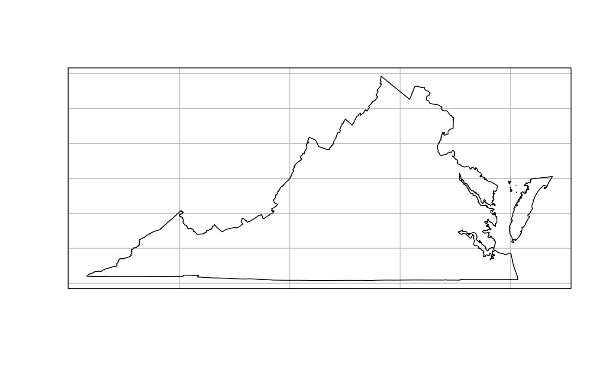
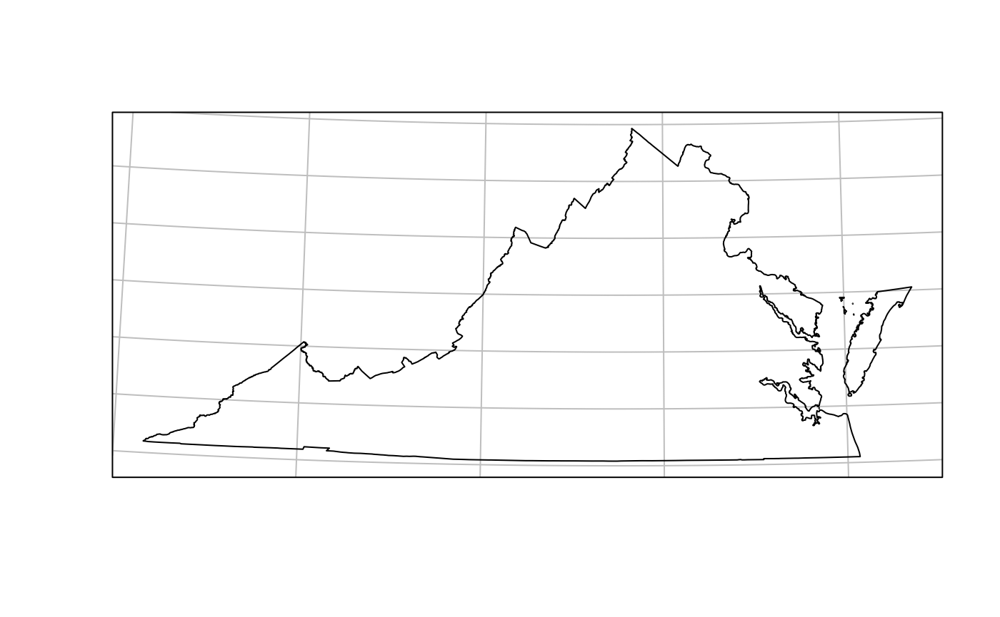

Overview
This R package includes contemporary state, county, and Congressional district boundaries, and zip code tabulation area centroids. It also includes historical boundaries from 1629 to 2000 for states and counties from the Newberry Library’s Atlas of Historical County Boundaries and historical city population data from Erik Steiner’s “United States Historical City Populations, 1790-2010.”
The package has helper data, including a table of state names, abbreviations, and FIPS codes, and functions and data to get State Plane Coordinate System projections as EPSG codes or PROJ.4 strings.
This package can serve a number of purposes. The spatial data can be joined to any other kind of data in order to make thematic maps. Unlike other R packages, this package also contains historical data for use in analyses of the recent or more distant past.
Use
This package provides a set of functions, one for each of the types of boundaries that are available. These functions have a consistent interface.
Passing a date to us_states(),
us_counties(), and us_cities() returns the
historical boundaries for that date. If no date argument is passed, then
contemporary boundaries are returned. The functions
us_congressional() and us_zipcodes() only
offer contemporary boundaries.
For almost all functions, pass a character vector of state names or
abbreviations to the states = argument to return only those
states or territories.
For certain functions, more or less detailed boundary information is
available by passing an argument to the resolution =
argument.
See the examples below to see how the interface works, and see the documentation for each function for more details.
library(USAboundaries)
# Check that USAboundariesData is available, since it is not on CRAN.
# And sf as it's not a dependency.
if(all(requireNamespace("USAboundariesData", quietly = TRUE) & requireNamespace("sf", quietly = TRUE))){
avail = TRUE
} else {
avail = FALSE
}
# Lookup for state abbr and state codes
state_codes[state_codes$state_abbr == "WI",]
#> state_name state_abbr state_code jurisdiction_type
#> 50 Wisconsin WI 55 state
# Returns an sf object
us_states(resolution = "low", states = "WI")
#> Simple feature collection with 1 feature and 12 fields
#> Geometry type: MULTIPOLYGON
#> Dimension: XY
#> Bounding box: xmin: -92.88793 ymin: 42.49192 xmax: -86.80587 ymax: 47.05468
#> Geodetic CRS: WGS 84
#> statefp statens geoidfq geoid stusps name lsad aland
#> 5 55 01779806 0400000US55 55 WI Wisconsin 00 140294555214
#> awater state_name state_abbr jurisdiction_type
#> 5 29341156602 Wisconsin WI state
#> geometry
#> 5 MULTIPOLYGON (((-86.93428 4...
# Returns a PROJ4
state_plane(state = "WI", type = "proj4")
#> [1] "+proj=lcc +lat_1=45.5 +lat_2=44.25 +lat_0=43.83333333333334 +lon_0=-90 +x_0=600000 +y_0=0 +ellps=GRS80 +datum=NAD83 +units=m +no_defs"
if (avail) {
library(sf)
states_1840 <- us_states("1840-03-12")
plot(st_geometry(states_1840))
title("U.S. state boundaries on March 3, 1840")
states_contemporary <- us_states()
plot(st_geometry(states_contemporary))
title("Contemporary U.S. state boundaries")
counties_va_1787 <- us_counties("1787-09-17", states = "Virginia")
plot(st_geometry(counties_va_1787))
title("County boundaries in Virginia in 1787")
counties_va <- us_counties(states = "Virginia")
plot(st_geometry(counties_va))
title("Contemporary county boundaries in Virginia")
counties_va_highres <- us_counties(states = "Virginia", resolution = "high")
plot(st_geometry(counties_va_highres))
title("Higher resolution contemporary county boundaries in Virginia")
congress <- us_congressional(states = "California")
plot(st_geometry(congress))
title("Congressional district boundaries in California")
}
#> Linking to GEOS 3.12.1, GDAL 3.8.4, PROJ 9.4.0; sf_use_s2() is TRUEState plane projections
The state_plane() function returns EPSG codes and PROJ.4
strings for the State Plane Coordinate System. You can use these to use
suitable projections for specific states.
if (avail) {
va <- us_states(states = "VA", resolution = "high")
plot(st_geometry(va), graticule = TRUE)
va_projection <- state_plane("VA")
va <- st_transform(va, va_projection)
plot(st_geometry(va), graticule = TRUE)
}
